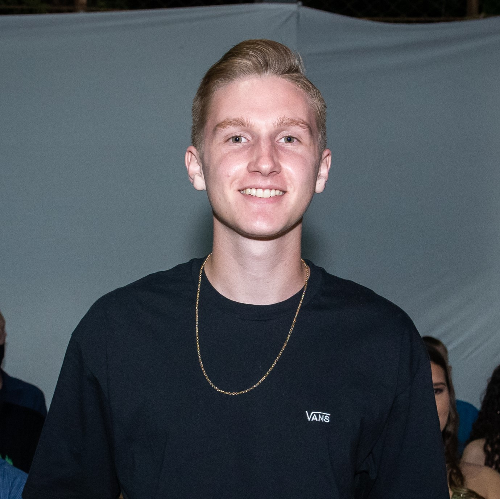

Eduardo Mauricio Sehn
Minha experiência profissional
--Expresso Sinimbu--
Auxiliar de almoxarifado - 2023 - 2024
Cobrador de ônibus - 2021 - 2022
--Imply tecnologia--
Estagiário / bolsista:
Aprendi desenvolvimento back-end em PHP
Desenvolvimento front end com HTML, CSS e JS. Banco de dados SQL
--Compass Uol--
Estagiário
Desenvolvimento back-end com Java Spring Boot, banco de dados Sql q NoSql
Metodologias ágeis com scrun e kanban, além de trabalho em equipe